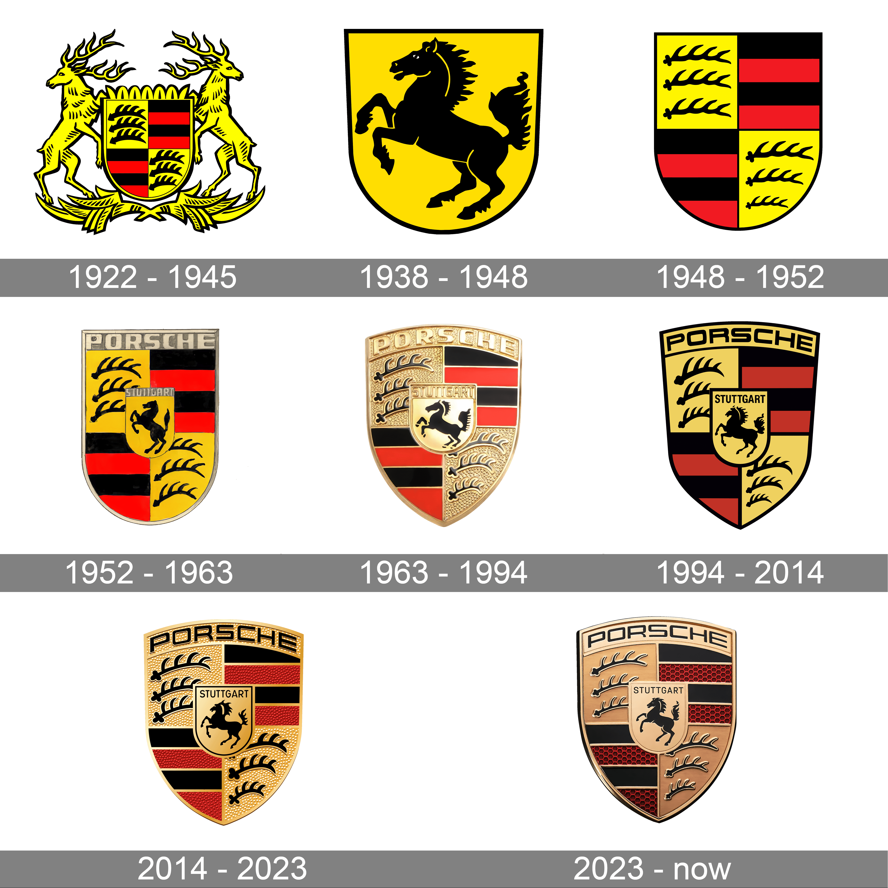

Porsche, a name synonymous with luxury, performance, and innovation, has etched its mark deep into the annals of automotive history. From humble beginnings to becoming one of the most revered brands in the industry, the journey of Porsche is a testament to vision, determination, and a relentless pursuit of excellence.
The story of Porsche begins in 1931 when Ferdinand Porsche founded the company under the name "Dr. Ing. h.c. F. Porsche GmbH." Initially, the company offered motor vehicle development work and consulting. Their breakthrough came in 1939 with the creation of the Volkswagen Beetle, an iconic vehicle that would shape the automotive landscape for decades to come.
Following World War II, Ferdinand Porsche's son, Ferry Porsche, took the reins of the company. It was Ferry's ambition to create his own sports car, one that would carry the family name and embody the engineering prowess that defined the Porsche legacy. In 1948, this vision became a reality with the unveiling of the Porsche 356, the first production vehicle to bear the Porsche badge. The 356 captured the essence of driving pleasure with its sleek design and spirited performance, laying the foundation for Porsche's future success.
Throughout the 1950s and 1960s, Porsche continued to innovate and dominate the world of motorsport. The 550 Spyder, 718 RSK, and 904 Carrera GTS were among the formidable racing machines that cemented Porsche's reputation on the track, claiming victories at prestigious events like the 24 Hours of Le Mans and the Targa Florio. These successes not only showcased Porsche's engineering prowess but also served as a testament to the brand's commitment to performance and reliability.
The 1960s also saw the introduction of one of Porsche's most iconic models, the 911. Launched in 1963, the 911 would go on to become the quintessential sports car, revered for its timeless design, exhilarating performance, and unrivaled handling. Over the years, the 911 has evolved and adapted, staying true to its roots while embracing advancements in technology and design, earning its place as a cultural icon and a symbol of automotive excellence.
As the decades passed, Porsche continued to push the boundaries of innovation. The introduction of groundbreaking technologies such as turbocharging, all-wheel drive, and advanced aerodynamics further solidified Porsche's reputation as a pioneer in automotive engineering. Models like the 959, Carrera GT, and more recently, the 918 Spyder, showcased Porsche's ability to blend performance with sustainability, setting new benchmarks for performance and efficiency.
In addition to its road-going vehicles, Porsche's commitment to motorsport has remained unwavering. The brand's continued success in events like the FIA World Endurance Championship and the IMSA WeatherTech SportsCar Championship serves as a testament to Porsche's racing pedigree and its dedication to pushing the limits of performance on and off the track.
Today, Porsche stands as a beacon of automotive excellence, revered by enthusiasts and admired by competitors. From the racetrack to the open road, the Porsche name represents a legacy of innovation, passion, and driving pleasure. As the company looks towards the future, one thing remains certain: the spirit of Porsche will continue to inspire and captivate generations of automotive enthusiasts for years to come.